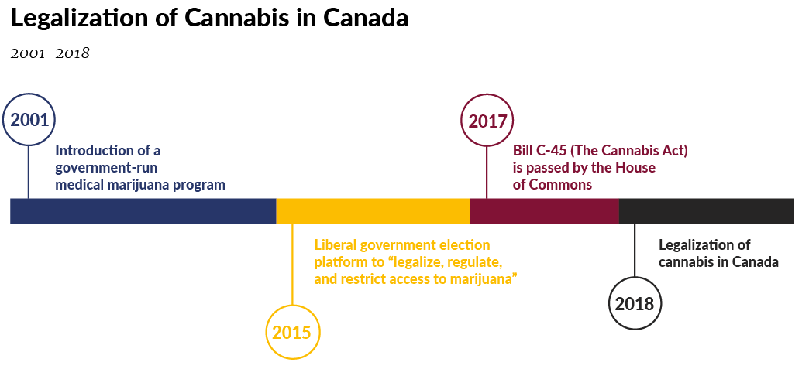
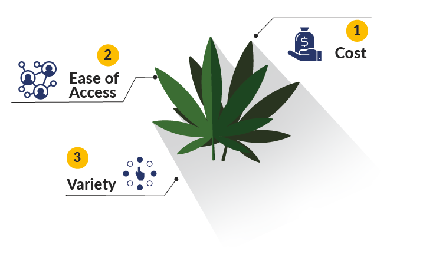
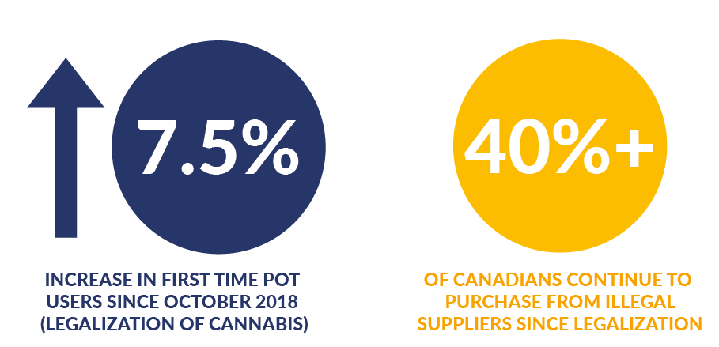
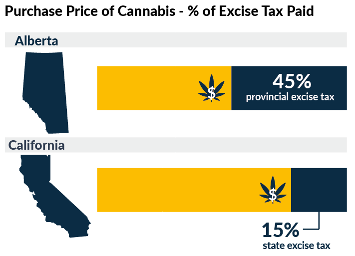

Introduction
For the better part of the past century, the distribution and consumption of cannabis products has been criminalized in Canadian law. However, as the popularity of marijuana spread, it has created pervasive issues surrounding its enforcement to curb the use and distribution of an ever growing black market. Beginning in 1972, it became more commonplace to speak out in favour of marijuana’s decriminalization and eventual full legalization by members of the government and general public alike. Eventually, in 2015, the Liberal government unveiled their election platform, stating their intention to, “legalize, regulate, and restrict access to marijuana,” arguing that the current system in place promoting prohibition was not effective, ultimately resulting in recreational marijuana being legalized in October 2018.1
Throughout the years, a number of arguments have been made to support the legalization of cannabis. The argument which drew the greatest appeal from Ottawa, however, was to take profits out of the hands of criminals, cartels and drug traffickers. As a beneficial consequence, access of harmful products would become more difficult for minors, safety regulations would become easier to enforce, and jobs would be created. After having been legal for slightly over a year in Canada, the relevant question that now needs to be addressed is: What impact has legalization had on the black market?
Post-Legalization Landscape: California and Canada
Although the cannabis market in the United States is regulated differently than in Canada, the impact of legalization has had similar effects in both countries. Even though cannabis has been legal in the state of California for nearly two years, the black market still continues to thrive to this day. In 2019, the black market generated over $9 billion in marijuana sales, whereas only $3 billion of profits were made in the legal market.2 While there are penalties and other legal implications in place to hinder unregulated sales, the illegal market continues to expand. Similarly, a year after legalization, Statistics Canada determined that only 29% of cannabis users stated they purchased or received their product from a legal source. Toronto lawyer Daniel Brown states, “until the legal industry matures, the black market will flourish.”3
While both governments have attempted to regulate cannabis sales to benefit the general public, the legal market has gaps that prevent the black market from being completely eradicated. Furthermore, certain aspects of the legal market directly support and enable the success of the black market, destroying the purpose of legalization itself. In order to effectively understand the current landscape and implement measures for the legal market to thrive, it is essential to understand exactly what the marijuana black market uniquely provides.
What the Black Market Provides
As of 2019, 71% of cannabis users in Canada purchase illegally from the black market.4 As such, it’s important to understand the value proposition of the black market. Currently, the black market provides for its consumers needs by offering three specific convenience factors: low prices, consumer accessibility, and product variety.
Cost
On average, a gram of marijuana sells at an affordable consumer price of $5.59 on the black market. While originally higher, since legalization in October 2018, prices on illicit markets have fallen by more than 12%.5 Illegal sellers are able to provide products at a low price in comparison with legal distributors because of low-cost investments required to purchase products from their supply chains, and inconsistent pricing across the industry. Due to the fact the black market does not need to comply with stringent product regulation standards, sellers are able to more freely dictate their own prices, and determine profit margins for themselves.
Accessibility
The black market is infamous for its easy accessibility to a wide variety of products that are not currently available in the legal market. Consumers have access to tailored services from their street dealers, and illicit websites offer easy online purchases and a 48-hour delivery window.6 The mail-order marijuana (MOM) sector sells edibles with high levels of THC that are too powerful to be regulated or deemed federally legal. The black market establishes further reach by catering to more experienced users with higher THC tolerances.7 In certain illegal dispensaries, consumers have access to the product before even purchasing it as they can sample the product and smoke it in store.8
Variety of Products
THC-infused edibles are a burgeoning segment of the cannabis black market growing in use and popularity. Consumers can access a diverse variety of products in the form of cannabis-infused chocolate bars, gummies, baked goods, and topicals. According to Statista, a recent survey conducted on marijuana users in Canada showed that 34.6% preferred other methods of consuming cannabis such as vaping, edibles, and cannabis-infused drinks.9 Since these products are only available through illicit sellers, the illegal market stands as the only option available to consumers, further highlighting the value of the black market and its diverse array of products. Conversely, magnifying the lag and response from governments to establish framework and access to products sought by consumers.
Social Aspect: Supporting Old Habits
Ultimately the government’s intention behind legalization was to eliminate the black market and protect Canadians. However, legalization has counterintuitively encouraged illicit sales, by shifting the stigma around cannabis consumption, increasing activity in the black market. Pre legalization, consumers were much more hesitant to try marijuana. Post legalization, however, it is more socially acceptable and people are more willing to try it now that it is legal. Problematically, according to Statistics Canada, more than 40% of Canadians who have used marijuana since legalization have continued to purchase from illegal suppliers. The legalization process has seemed to only provide users with the benefit of being able to use cannabis products freely, rather than deterring them from buying illegally. More than a third of cannabis users have reported their sources for marijuana products being family or friends, among women this number jumps to 42%.10 Individuals who did not previously use cannabis products are more likely to potentially use them post-legalization, but are likely to be directed to black market products due to family and friends, which is often the main source of initiating cannabis product use. In addition, those experimenting with cannabis are more likely to consume edibles or use pot-based products like skin creams and topicals which are available in the legal market, further perpetuating illegal marijuana usage and purchases in the black market.
Despite the availability of legal dispensaries, consumers continue to purchase marijuana from the black market due to a number of convenience factors, such as lower costs, easy accessibility, and a larger variety of cannabis byproducts. These barriers have further perpetuated consumers towards turning to the black market to satisfy their demands.
According to Statistics Canada, a gram of legal cannabis can sell up to $10.23 whereas the equivalent amount of black market cannabis only sells for $5.59. Since the legalization in October of 2018, the price of legal cannabis has increased by 4.9%, whereas in the black market, prices have fallen by 12%, allowing illegal sales to retain their large share of the cannabis market due to the prominent price gap.11 Cannabis in the legal market is more expensive due to the low supply of government-sanctioned sellers as a result of high licensing fees required to open a legal cannabis dispensary. Operational expenses can cost up to tens of thousands of dollars in addition to long bureaucratic processes for annual license renewals, attorneys, storefronts, and mandatory product testing. This lack of convenient supply further contributes to the high demand for black market cannabis due to the easy accessibility and higher costs of legal cannabis versus black market cannabis from unlicensed sellers. In addition, only certain products and strains are available in the legal market in comparison to all the products easily available in the black market such as cannabis-infused edibles and topicals which have yet to be legalized in Canada. In terms of the legal online market, many consumers were averse about submitting their private information including their address and credit card when making online cannabis purchases. In addition, many consumers prefer being able to view and experience the product first-hand which they could not do online.12 The legal market has ultimately failed to procure market share as they have not developed a competitive advantage or try to replicate the benefits consumers maintain through the black market.

Due to the initial shortage of legal dried cannabis in the early months of legalization, retail expansion was limited in Ontario and Vancouver with only 24 and 20 legal dispensaries open respectively.13,14 As a result, producers were not able to keep up with the increasing demand for dried cannabis following legalization. More than 85% of the legal cannabis supply are unfinished raw materials that have not yet been processed, packaged, or made ready to sell. Canada’s overall unfinished inventory for 2019 was 328,000 kilograms, 24 times more than the total sales of 13,000 kilograms in August of the same year.15 Furthermore, according to the Cannabis Council of Canada, some of that inventory may never be ready to sell due to contamination or microbial risk and pesticides. In addition, Canadian regulatory laws overseeing cannabis, do not allow licensed producers to sell that product nor require them to immediately destroy it. Consequently, legal cannabis production in Canada has been exceeding demand and the sheer cost of producing cannabis is causing a deficit for legal producers. Legal sales are only satisfying a small fraction of the demand which is primarily being met by black markets. The overall demand for dried cannabis including both legal and illegal sales have been almost 56,000 kilograms per month. In April 2019, only 9,000 kilograms were sold on the legal market, leaving the black market to satisfy the remaining 43,000 kilograms of demand for dried cannabis.16 Ultimately, the major issue with the legalization of cannabis in Canada has been its inability to establish a proper retail infrastructure and business cycle to maintain proper supply chain operations.
Licensing
The lack of retail opportunities, combined with regulations and cost, make it very difficult for the legal market to compete with the black market. The next step for legalization is to change governmental policies, regulations and underlying framework. Currently, small businesses who are legally growing and selling cannabis are struggling due to a number of strict regulations that they must follow allowing for a disadvantageous business model which simply does not work. For example, the government has set strict regulations and standards on cannabis to ensure the safety of consumers and the environment. However these regulations have been driving out smaller cannabis farmers since the black market has been undercutting the legal market by setting their prices so low to drive out their competitors, creating barriers to entry for new legal competitors. The legalization of cannabis has lowered prices while the cost of processing the plant has remained the same, further contributing to the higher costs for small farmers to maintain their business. In order to support smaller cannabis growers, the government should emphasize more regular inspections instead of a lengthy and expensive upfront licensing process. This would make it easier for small farmers to continue to maintain their business and increase their profits rather than only benefitting larger corporations.17
Decrease taxes:
The government should also reduce taxes on legal cannabis products since Alberta recently increased its excise tax up to 45% of the purchase price of legal cannabis.18 Canada should follow California’s example whose legislature is considering passing Bill 286, a bill that would cut excise taxes for legal cannabis by 15% to 11% for three years and completely eliminate a cultivation tax for cannabis growers until 2022.19 Reducing taxes would help legal cannabis producers compete in the cannabis industry and would ensure a healthy legal market for Canada.20 At the very least it would allow the legal market to gain some traction and grow to begin with. It’s important to exercise appropriate taxes to support government efforts and essential services while seeking a fair middle ground which doesn’t excessively increase markup rates- allowing the industry to be competitive and ultimately thrive for the betterment of citizens and users across Canada.
How Ontario can Learn:
Constitutionally, Canadian provinces have a certain level of autonomy and control over the regulation of the cannabis industry. For both Ontario and Canada, it is important to analyze and understand what provinces such as Quebec have done to succeed in the launch of legalization. In Ontario, the Ontario Cannabis Retail Corporation accumulated a loss of $42 million for the 2018-2019 year.21 The overseeing body in Quebec, the SQDC, was able to generate profit in the first quarter of year 2 of legalization. One factor in Ontario which mitigated growth was the amount of retail stores remaining unopened. Next, Ontario took control and spent money on distribution centres- something which Quebec did not do. According to Brock University business professor Michael Armstrong, “Quebec is running a much leaner, much more efficient cannabis agency. They don’t have a warehouse — they ship directly to the store from the producers. Additionally, in terms of price; Quebec has been able to provide cheaper legal offerings as compared to Ontario, minimizing the price gap between the legal and illegal market.
Quebec has ultimately treated the legalization more as a business by introducing regulations to allow the sales and legal distribution of cannabis products, allowing it to compete with the black market. This has created further appeal with minimal accessibility issues for consumers.
Conclusion
It is clear changes must be made to the legalization and regulation framework across Canadian provinces in order for consumers to turn away from the black market. Ontario and provinces alike, must focus on the overall process and leverage what works for the black market, from competitive pricing, to multiple payment options and platforms for consumers to choose from. In doing so, the legal industry will not only be able to replicate the competitive advantages offered by the black market, but also do so in a regulated manner with higher quality control, and fewer safety hazards. Until the legal industry addresses its systemic shortfalls, however, the black market will continue to flourish and grow. Finally, it is important to understand the purpose of legalization: eradicating the black market. It is vital for governments to understand that marijuana is not a key source of revenue in terms of tax dollars. Rather, it is an investment and service for the people; creating safety and standards to protect citizens and ultimately deter criminal activity stemming and supporting the black market.
Bibliography
- 1https://www.huffingtonpost.ca/2018/10/11/canada-cannabis-timeline_a_23558319/
- 2https://californiaglobe.com/section-2/marijuana-industry-struggling-as-black-market-sales-nearly-triple-legal-sales-in-california/
- 3 https://www.cbc.ca/news/politics/marijuana-one-year-black-market-1.5320552
- 4https://www.cbc.ca/news/politics/marijuana-one-year-black-market-1.5320552
- 5https://www.bnnbloomberg.ca/as-canadian-pot-gets-cheaper-black-market-still-offers-best-deals-1.1328908
- 6https://www.cbc.ca/news/politics/edible-cannabis-websites-operating-without-impunity-1.4856358
- 7https://globalnews.ca/news/6357816/legal-edibles-competitors/
- 8 https://www.youtube.com/watch?v=2RMNuglsUAc
- 9 https://www.statista.com/statistics/942735/top-marijuana-consumption-methods-canada/
- 10https://globalnews.ca/news/5770642/marijuana-legalization-illegal-purchasing/
- 11 https://www.bnnbloomberg.ca/as-canadian-pot-gets-cheaper-black-market-still-offers-best-deals-1.1328908
- 12 https://www.ccsa.ca/sites/default/files/2019-10/CCSA-Synthesis-Canada-Cannabis-Legalization-First-Year-Policy-Brief-2019-en.pdf?fbclid=IwAR3WV9DtqoY-8cnmhbGlU4t_D6y1SyHcWWqcjJwunQylb_TDAOL8Xxy7zeY
- 13 https://mjbizdaily.com/no-longer-a-shortage-canadian-cannabis-industry-group-declares/
- 14 https://www.macleans.ca/economy/business/why-legal-pot-was-taking-a-hit-in-canada-weeks-before-covid-19-sent-markets-plunging/
- 15 hhttps://business.financialpost.com/cannabis/too-much-weed-canadian-cannabis-producers-are-sitting-on-a-mountain-of-inventory-and-its-making-some-industry-watchers-nervous
- 16 https://globalnews.ca/news/5463653/canadas-cannabis-supply-feds-denial/
- 17 https://www.nationalmagazine.ca/en-ca/articles/law/hot-topics-in-law/2019/how-do-we-eliminate-the-cannabis-black-market-lice
- 18 https://www.cannabisbusinesstimes.com/article/alberta-raises-excise-tax-cannabis-vape-products/
- 19 https://www.foxbusiness.com/features/california-might-lower-its-marijuana-tax-heres-why
- 20 https://www.macleans.ca/economy/business/why-legal-pot-was-taking-a-hit-in-canada-weeks-before-covid-19-sent-markets-plunging/
- 21 https://globalnews.ca/news/6034185/legal-weed-year-1-what-you-need-to-know/